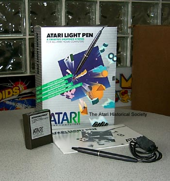

Atari introduced its second version of the lightpen for its XL line of home computers. The original Lightpen, the Atari CX-70 was large and bulky, the newer CX-75 was closer to an actual pen sized object. Included with the lightpen was Atari Graphics, a fairly well written piece of graphics painting software which was easy and fun to use. The only other software package written to use the Atari Lightpen was Letter Tutor, part of Atari's new LEARNING SYSTEMS series of interactive learning software.